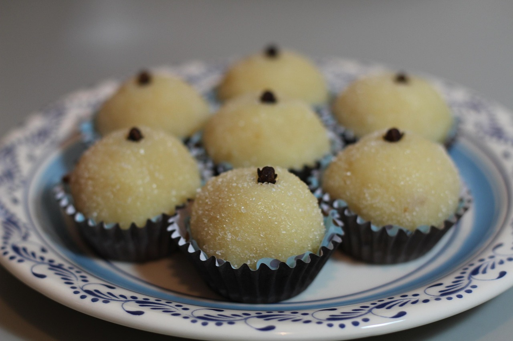

Home
Beijinho

Image by Larissa Kozemekin from Pixabay
A coconut marvel
As brigadeiro, this recipe is a tradition in brazilian birthdays party's that can also can be found in bakeries and coffee shops.
It's as simple to prepare and also can be eaten with a spoon in it's unrolled version.
Ingredients
- 1 can of condensed milk
- 100g of coconut flakes (no sugar added)
- 1 tablespoon of butter
- White sugar (optional)
Directions
- Put all the ingredients in a saucepan.
- Cook and stir the mixture in medium heat until thickened.
- Transfer mixture to a bowl or plate and let it cool down.
Beijinho is ready to eat with a spoon. But if you want the traditional rolled balls just follow the steps bellow:
- Pinch off some of the dough and roll into a small ball (if the dough is too sticky put some butter on hands before rolling the brigadeiros).
- Put the whitesugar in a bowl or plate and roll each brigadeiro in it.
Enjoy it!
Note: Beijinho pairs well with brigadeiro, and also can be used as a frosting for cakes, specially coconut and chocole ones.